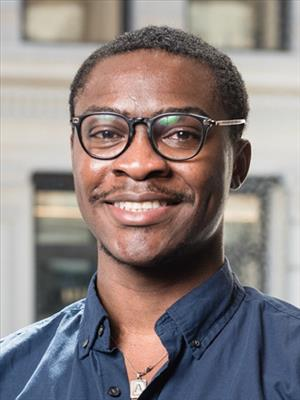

Principal Investigator · Site Director
Daniel Alabi
University of Illinois Urbana-Champaign
Leads the secure communications thrust and the overall program. His expertise includes quantum privacy and cryptography, algorithms, and information theory. He oversees project integration, recruitment, and the student research experience.